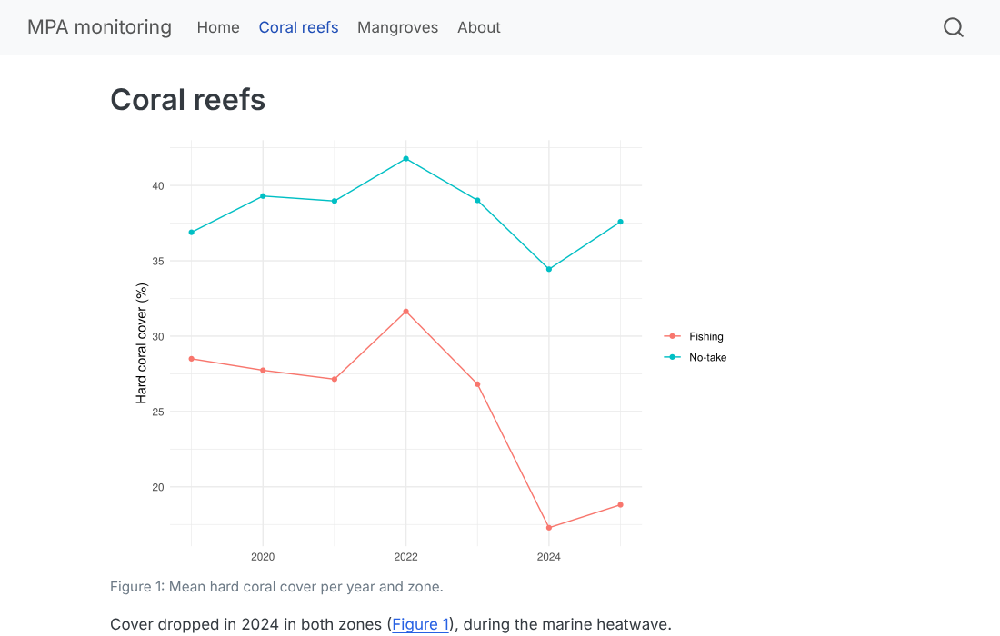

Data of this session (simulated). The MPA managers
want two things: the mangrove report as a printable PDF
for the regional authorities (Session A8 template), and a small
public website where partners and communities can see
the main results of the monitoring (coral reefs 2019–2025 and mangroves
2025). mpa-monitoring-site.zip is a ready-made Quarto
website project with these data (reef and mangrove CSV files,
references). Type: the same tables as Sessions A0–A8; nothing
personal — which matters before publishing.
Données de cette séance (simulées). Les
gestionnaires des AMP veulent deux choses : le rapport
mangroves en PDF imprimable pour les autorités régionales
(modèle de la séance A8), et un petit site web public
où partenaires et communautés peuvent voir les principaux résultats du
suivi (récifs 2019–2025 et mangroves 2025).
mpa-monitoring-site.zip est un projet de site Quarto prêt à
l’emploi avec ces données (fichiers CSV récifs et mangroves,
références). Type : les mêmes tableaux qu’aux séances A0–A8 ;
rien de personnel — ce qui compte avant de publier.
⇩ mpa-monitoring-site.zip ⇩ mangrove_report.qmd
Typst (format: typst) |
LaTeX (format: pdf) |
|
|---|---|---|
| install | nothing: included in Quarto | once: quarto install tinytex (Terminal), ≈ 300 MB;
missing LaTeX packages are then installed automatically |
| speed | very fast | slower |
| table of contents, numbered sections | yes | yes |
lists of figures and tables (lof,
lot) |
no | yes |
| journal templates, thesis classes | few, growing | many (Elsevier, Springer, university classes…) |
| errors | short, readable | long logs |
Advice: start with Typst for everyday reports; use
LaTeX when you need lists of figures and tables or an official template.
Add citeproc: true under typst: to get the
same author–year citations as in HTML.
Typst (format: typst) |
LaTeX (format: pdf) |
|
|---|---|---|
| installation | rien : inclus dans Quarto | une fois : quarto install tinytex (Terminal), ≈ 300 Mo
; les packages LaTeX manquants s’installent ensuite automatiquement |
| vitesse | très rapide | plus lent |
| table des matières, sections numérotées | oui | oui |
listes des figures et des tableaux (lof,
lot) |
non | oui |
| modèles de revues, classes de thèse | peu, en progression | nombreux (Elsevier, Springer, classes d’universités…) |
| erreurs | courtes, lisibles | longs journaux |
Conseil : commencez par Typst pour les rapports
courants ; utilisez LaTeX quand il vous faut des listes des figures et
des tableaux ou un modèle officiel. Ajoutez citeproc: true
sous typst: pour avoir les mêmes citations auteur–date
qu’en HTML.
format:
typst:
papersize: a4
margin:
x: 2.5cm # left and right
y: 2cm # top and bottom
fontsize: 11pt
mainfont: "Linux Libertine" # any font installed on the computer
toc: true
number-sections: true
citeproc: true
pdf: # LaTeX
papersize: a4
geometry: margin=2.5cm
fontsize: 11pt
linestretch: 1.3 # line spacing
toc: true
lof: true
lot: true
number-sections: true
fig-pos: "H" # keep each figure where it is written
docx:
reference-doc: my-styles.docx # fonts, heading styles and margins of your institution{{< pagebreak >}} on its own line (all formats).fig-width and
fig-height are in inches (1 in = 2.54 cm):
an A4 page with 2.5 cm margins leaves about 6.3 in of width. Set them
once under execute: or format: and change them
in a chunk when needed.quarto pandoc -o my-styles.docx --print-default-data-file reference.docx,
open it in Word, change the styles (not the text!) —
Heading 1, Normal, Caption — and save. Every
report rendered with reference-doc: my-styles.docx will use
them.embed-resources: true under html: puts images,
styles and scripts inside the file.{{< pagebreak >}} seul sur sa ligne (tous
formats).fig-width et
fig-height sont en pouces (1 po = 2,54 cm)
: une page A4 avec 2,5 cm de marges laisse environ 6,3 po de largeur.
Fixez-les une fois sous execute: ou format: et
changez-les dans un chunk si besoin.quarto pandoc -o mes-styles.docx --print-default-data-file reference.docx,
ouvrez-le dans Word, modifiez les styles (pas le texte
!) — Titre 1, Normal, Légende — et
enregistrez. Chaque rapport produit avec
reference-doc: mes-styles.docx les utilisera.embed-resources: true sous html: met images,
styles et scripts dans le fichier.Try it. Render the mangrove report with
--to typst, then change the margins to 2 cm, the font size
to 10pt, and add a page break before the Results. Compare the number of
pages.
À vous. Produisez le rapport mangroves avec
--to typst, puis passez les marges à 2 cm, la taille de
police à 10pt, et ajoutez un saut de page avant les résultats. Comparez
le nombre de pages.
A Quarto project is a folder with a
_quarto.yml file. With type: website, every
.qmd becomes a page, and quarto render (in the
Terminal, at the root of the project) builds the whole site into
output-dir. Unzip mpa-monitoring-site.zip,
open the .Rproj, and look at the settings:
Un projet Quarto est un dossier avec un fichier
_quarto.yml. Avec type: website, chaque
.qmd devient une page, et quarto render (dans
le Terminal, à la racine du projet) construit tout le site dans
output-dir. Décompressez
mpa-monitoring-site.zip, ouvrez le .Rproj, et
regardez les réglages :
# _quarto.yml — settings of the whole website (one file for all pages)
project:
type: website
output-dir: docs # GitHub Pages: Settings -> Pages -> branch main, folder /docs
website:
title: "MPA monitoring"
navbar:
left:
- href: index.qmd
text: Home
- href: coral.qmd
text: Coral reefs
- href: mangroves.qmd
text: Mangroves
- href: about.qmd
text: About
page-footer:
center: "Simulated data · R for marine sciences course"
format:
html:
theme: cosmo
toc: true
execute:
echo: false
warning: false
message: false
freeze: auto # re-run the R code only when a page changesmpa-monitoring-site/
├── _quarto.yml <- settings of the whole site
├── index.qmd <- home page (index = the first page)
├── coral.qmd mangroves.qmd about.qmd
├── references.bib
├── data/raw/ <- the CSV files
├── .gitignore .gitlab-ci.yml
└── docs/ <- created by quarto render: THE WEBSITEquarto preview # live preview in the browser while you edit (Ctrl + C to stop)
quarto render # builds every page into docs/
freeze: auto (in _quarto.yml) stores the
results of each page in _freeze/ and re-runs its R code
only when the page changed: a site with many pages
renders quickly, and a collaborator can render the site
without your data or packages. Commit
_freeze/ with the rest.
freeze: auto (dans _quarto.yml) garde les
résultats de chaque page dans _freeze/ et ne relance son
code R que si la page a changé : un site de nombreuses
pages se construit vite, et un collaborateur peut produire le site
sans vos données ni vos packages. Versionnez
_freeze/ avec le reste.
docs/ and create an empty file
docs/.nojekyll once
(file.create("docs/.nojekyll")) — it tells GitHub to serve
the files as they are._freeze/,
docs/) and push (Session A2).https://<your-account>.github.io/mpa-monitoring-site/.
This course website is published exactly this way.Alternative: quarto publish gh-pages renders the site
and pushes it to a separate gh-pages branch for you (then
docs/ is not needed).
On a free GitHub account, Pages only works for public repositories (private ones need a paid plan).
docs/ et créez une fois un
fichier vide docs/.nojekyll
(file.create("docs/.nojekyll")) — il dit à GitHub de servir
les fichiers tels quels._freeze/,
docs/) et poussez (séance A2).https://<votre-compte>.github.io/mpa-monitoring-site/.
Ce site de cours est publié exactement ainsi.Variante : quarto publish gh-pages produit le site et le
pousse pour vous sur une branche séparée gh-pages (alors
docs/ n’est pas nécessaire).
Avec un compte GitHub gratuit, Pages ne fonctionne que pour les dépôts publics (les dépôts privés demandent un abonnement payant).
GitLab publishes what a small CI job puts in a
folder named public/. The template contains this
.gitlab-ci.yml: at each push on main, it
copies your rendered docs/ into public/. The
site appears at
https://<your-account>.gitlab.io/mpa-monitoring-site/
(see Deploy → Pages in the project). GitLab Pages also works
for private projects, and Settings → General →
Visibility → Pages can restrict the site to project members.
GitLab publie ce qu’une petite tâche CI place dans
un dossier nommé public/. Le modèle contient ce
.gitlab-ci.yml : à chaque push sur main, il
copie votre docs/ produit dans public/. Le
site apparaît à
https://<votre-compte>.gitlab.io/mpa-monitoring-site/
(voir Deploy → Pages dans le projet). GitLab Pages fonctionne
aussi pour les projets privés, et Settings →
General → Visibility → Pages peut réserver le site aux membres du
projet.
The quickest way for a single report or a small site:
quarto publish quarto-pub (free account at https://quartopub.com).
Everything published there is public.
Le plus rapide pour un rapport seul ou un petit site :
quarto publish quarto-pub (compte gratuit sur https://quartopub.com).
Tout ce qui y est publié est public.
Before you publish, check: no names, phone numbers or GPS positions of people or households (survey data!); no exact positions of sensitive resources (spawning aggregations, sea cucumber stocks, nesting beaches) if poachers could use them; the agreement of the data owners (communities, MPA managers, the NGO). A public repository shows all its history: a file deleted today is still visible in old commits.
Avant de publier, vérifiez : pas de noms, téléphones ou positions GPS de personnes ou de ménages (données d’enquête !) ; pas de positions exactes de ressources sensibles (agrégations de reproduction, stocks d’holothuries, plages de ponte) si des braconniers pouvaient s’en servir ; l’accord des propriétaires des données (communautés, gestionnaires d’AMP, ONG). Un dépôt public montre tout son historique : un fichier supprimé aujourd’hui reste visible dans les anciens commits.
quarto install tinytex first). Which one has a list of
figures?reference-doc.mpa-monitoring-site.zip. How many pages
(.qmd files) does the site have? How many output formats
does the YAML of mangrove_report.qmd define?methods.qmd to the site (link it in the
navbar) and run quarto preview.quarto install tinytex d’abord). Lequel a une liste des
figures ?reference-doc.mpa-monitoring-site.zip. Combien de pages
(fichiers .qmd) le site contient-il ? Combien de formats de
sortie le YAML de mangrove_report.qmd définit-il ?methods.qmd au site (avec un lien dans
la barre de navigation) et lancez quarto preview.If GitHub Pages shows a 404 page: check the folder
(/docs) in Settings → Pages, that
docs/index.html exists in the repository, and wait one or
two minutes. If the pages have no style, docs/.nojekyll is
missing or the site_libs/ folder was not committed.
Si GitHub Pages affiche une page 404 : vérifiez le dossier
(/docs) dans Settings → Pages, que
docs/index.html existe dans le dépôt, et attendez une ou
deux minutes. Si les pages n’ont pas de mise en forme,
docs/.nojekyll manque ou le dossier site_libs/
n’a pas été validé.
# 1
quarto render reports/mangrove_report.qmd --to typst
quarto install tinytex
quarto render reports/mangrove_report.qmd --to pdf # this one has the List of Figures / Tables
# 2
quarto pandoc -o my-styles.docx --print-default-data-file reference.docx
# ...edit the styles in Word, then in the YAML: docx: reference-doc: my-styles.docx
# 3: index, coral, mangroves, about = 4 pages; html, typst, pdf, docx = 4 formats
# 4: methods.qmd + in _quarto.yml, under navbar: left: - href: methods.qmd
quarto preview
# 5
git init -b main && git add . && git commit -m "First version of the monitoring website"
git remote add origin git@github.com:your-account/mpa-monitoring-site.git
quarto render && touch docs/.nojekyll && git add . && git commit -m "Render the site" && git push -u origin main
# then Settings -> Pages -> main /docs